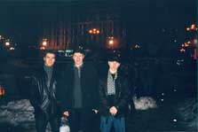
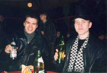
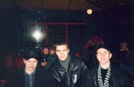
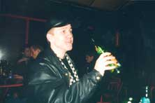
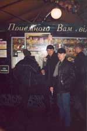
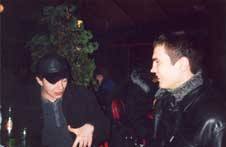
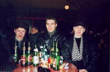

Автор репортажа: Del
|
|
Я провожу очень много времени в инете=) И одним из самых
посещаемых мною сайтов (после удафф.кома) является
Форум на
Исходниках.ru. Естессна, давно появлялись мысли встретиться тем,
кто часто общается на форуме, посидеть попить пивка;)
В России (в Москве, в Питере) народ с форума уже много раз собирался, а на Украине такого никогда не было. Конечно, нас гораздо меньше (вон сколько в одной Москве народу, а;) но, как говорится, главное - желание. Оно было, и самые не ленивые пацаны, которые знают, что в жизни есть много классных вещей кроме компов и инета, встретились в Киеве (если кто не в курсе - это столица Украины) и попили пивка=) |
 Историческая встреча.Центр Киева, 18 часов вечера. Слева направо: Birkof aka Sandro, Del, Sanya. |
|
 Ну за сэйшен! |
 Первый сейшен на Украине. |
 Sany'я заряжается топливом.Всё-таки оболоньское пиво лучше всего пить в Киеве - оно там самое свежее и вкусное;) |
 Сколько ни бери, всё равно два раза бегать;) |
 Я оживлённо заряжаю Sandro про свою старую работу... |
 Сэйшн удался! |